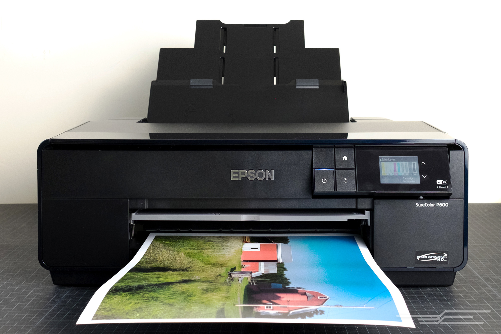

Introduction to Printers
A printer is a device that accepts text and graphic output from a computer and transfers the information to paper, usually to standard size sheets of paper. Printers vary in size, speed, sophistication, and cost. In general, more expensive printers are used for higher-resolution color printing.

The four printer qualities of most interest to most users are:
- Color: Color is important for users who need to print pages for presentations or maps and other pages where color is part of the information. Color printers can also be set to print only in black-and-white. Color printers are more expensive to operate since they use two ink cartridges (one color and one black ink) that need to be replaced after a certain number of pages. Users who don't have a specific need for color and who print a lot of pages will find a black-and-white printer cheaper to operate.
- Resolution: Printer resolution (the sharpness of text and images on paper) is usually measured in dots per inch (dpi). Most inexpensive printers provide sufficient resolution for most purposes at 600 dpi.
- Speed: If you do much printing, the speed of the printer becomes important. Inexpensive printers print only about 3 to 6 sheets per minute. Color printing is slower. More expensive printers are much faster.
- Memory: Most printers come with a small amount of memory (for example, one megabyte) that can be expanded by the user. Having more than the minimum amount of memory is helpful and faster when printing out pages with large images or tables with lines around them (which the printer treats as a large image).
Types of Printers :
1) Impact Printers
Show More
2) Non-Impact Printers
Show More
Comparision Between Dot-Matrix, Laser-Jet and Ink-Jet Printers
Click Here
About Us
Click Here
Register for Getting Best Deals on Electronic Devices
Click Here